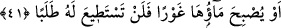
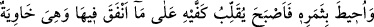
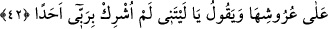
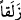

kurak yer olur. Kurtubî buradaki “ zelekan” kelimesinin ‘başı tıraş etme’ anlamına
da gelmesini mümkün görmüştür. Buna göre traş edilen baş gibi orada hiçbir bitkinin
kalmayacağı kastedilmiştir.
41. “Yahut, bağının suyu dibe çekilir de bir daha onu arayıp bulamazsın.”
“Yahut bağının suyu dibe çekilir de” ona eller ve kovalar ulaşamaz. “bir daha onu
arayıp bulamazsın.” Yerin dibine batan suyu, yeryüzüne çıkarmaya, geri getirmeye
ebediyyen güç yetiremezsin.
Celâleyn’de şöyle der: “Çekilen sudan geriye hiçbir eser kalmaz ki onu arayasınız.”
42. Derken onun serveti kuşatılıp yok edildi. Böylece, bağı uğruna yaptığı
masraflardan ötürü ellerini ovuşturup kaldı. Bağın çardakları yere çökmüştü. “Ah,
keşke ben Rabbime hiçbir ortak koşmamış olsaydım!” diyordu.
“Derken onun” o inkârcı kişinin bütün “serveti kuşatılıp yok edildi.” Bu cümle, bir
mukadder (fiil) üzerine atfedilmiştir. Sanki burada şöyle denilmektedir: “Mü’min
kardeşin olacağını beklediği bazı şeyler gerçekleşti. Mallarını helâk etti, özenle
koruduğu bağını, bahçesini yerle bir etti.
“Böylece, bağı uğruna yaptığı masraflardan ötürü ellerini ovuşturup kaldı.”
Üzülen kişinin sergilediği tipik bir davranış olarak o da büyük bir keder ve hasretle
ellerini kenetleyip karnının üstüne koydu. Çünkü mahzûn kişinin tavrı genellikle,
ellerini birbiri üstünü koymaktır.
Bahru’l-ulûm’da şöyle der: “Elleri ovuşturmak, elleri ve parmak uçlarını ısırmak,
parmak uçlarını yemek ve dişleri gıcırdatmak pişmanlık ve hasretten kinâye
davranışlardır. Çünkü bunlar üzüntüyü takip eden hareketlerdir. Takip eden, takip
edilene nisbet edilir. Böylece söz en yüksek zirveye ulaşır. Dinleyicinin bunu
anlamasıyla güzellik daha da artar.
Mesnevî’de der ki:
Geçmişe acımak, geçmişe özlem duymak yanlış bir iştir;
Giden geri gelmez! Onu yâdetmek de boş şeydir.
Herhalde âyette o anda helâk edilen bağa değil de ona yaptığı masraflara pişman
olduğunun özellikle zikredilmesi, pişmanlığın ihtiyârî fiillerden dolayı olmasındandır.